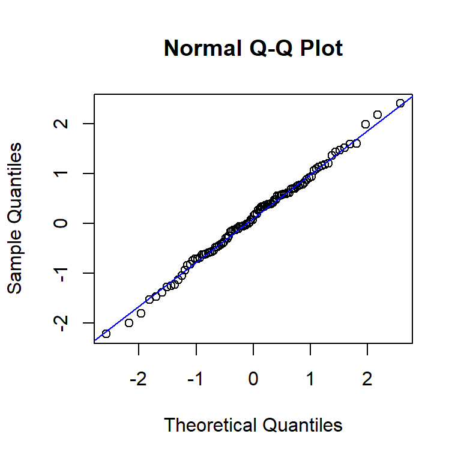
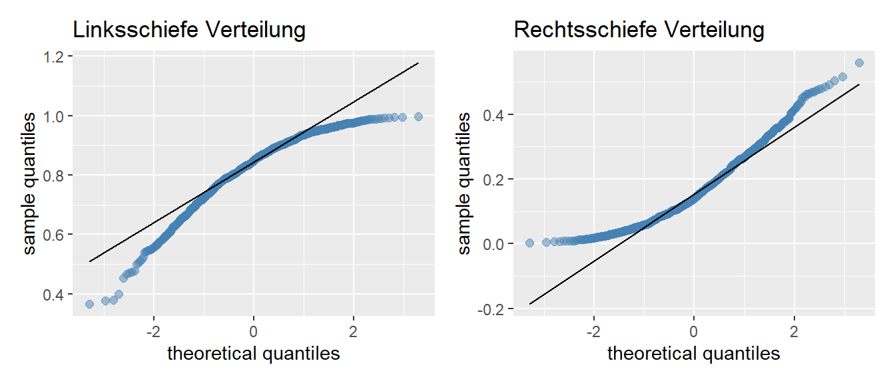
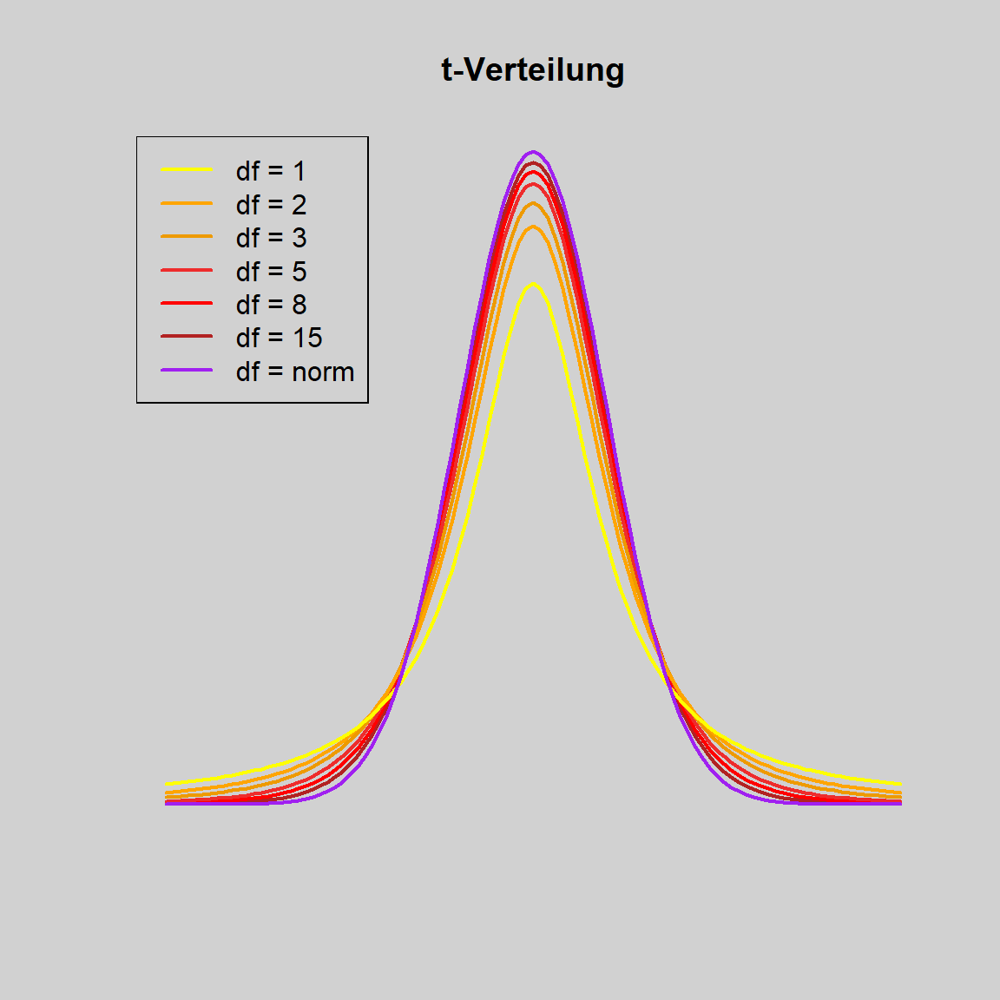

Kapitel 4 Wahrscheinlichkeitsverteilungen
Diskrete Wahrscheinlichkeitsverteilung
Die Ergebnisse eines Zufallsexperiments mit einer diskreten Variablen sind abzählbar bzw. können kategorisiert werden. Beispielsweise ist es beim Werfen eines Würfels nur möglich eine Zahl aus der Menge \(X = {1, 2, 3, 4, 5, 6}\) zu werfen. Der Wurf einer 2.6 ist jedoch nicht möglich. Die Anzahl der Seiten eines Würfels könnten gezählt und kategorisiert werden. Daher handelt es sich hierbei um eine diskrete Verteilung (Leonhart 2013).
Kontinuierliche (= stetige) Wahrscheinlichkeitsverteilung
Stetige Wahrscheinlichkeitsfunktionen beschreiben die Ergebnisse eines Zufallsexperiments, in dem unendlich viele Elementarereignisse realisiert werden können. So entsteht eine stetige Dichtefunktion der Wahrscheinlichkeitsverteilung (Leonhart 2013).
Die Betrachtung eines einzelnen Ereignisses in einer stetigen Wahrscheinlichkeitsverteilung ist nicht sinnvoll, da die Wahrscheinlichkeit für ein Elementarereignis immer gegen null geht. Es ist sehr unwahrscheinlich, dass eine Studentin mit genau 167.793 cm Grösse an einer Lehrveranstaltung teilnimmt.
Deshalb wir die Wahrscheinlichkeit für Intervalle zwischen zwei Elementarereignissen bestimmt. Diese Wahrscheinlichkeit entspricht der Fläche (dem Integral) der Dichtefunktion der stetigen Wahrscheinlichkeitsverteilung in diesen Grenzen (Leonhart 2013).
4.1 Binomialverteilung
Die Binomialverteilung beschreibt die Auftretenswahrscheinlichkeit zweier alternativer Ereignisse. Sie wird durch einen Bernoulli-Prozess erzeugt. Dies ist eine Folge voneinander unabhängiger Ereignisse mit jeweils zwei möglichen Ausgängen. Die Wahrscheinlichkeiten für die einzelnen Ereignisse sind jeweils konstant (\(p\) bzw. \(q = 1 - p\)) (Leonhart 2013).
4.1.1 Voraussetzungen
- Die Versuche müssen unabhängig sein.
- Die Anzahl der Versuche muss bekannt sein.
- Jedes Versuchsergebnis ist entweder ein Erfolg oder ein Misserfolg.
- Die Wahrscheinlichkeit für einen Erfolg muss für jeden Versuch gleich sein.
4.1.2 Funktion der Binomialverteilung
Die Funktion der Binomialverteilung beschreibt die Wahrscheinlichkeit des \(k\)-maligen Eintreffens eines Ereignisses X bei \(n\) Ereignissen
Wenn \(p\) die Wahrscheinlichkeit für einen Erfolg ist, ist \(1-p\) die Wahrscheinlichkeit für einen Misserfolg. \(n\) gibt die Anzahl der Versuche an und \(k\) die Anzahl der Erfolge.
\[\begin{equation} p(k, n) = {n \choose k}p^k(1-p)^{n-k} \tag{4.1} \end{equation}\]
Die Gleichung setzt sich aus drei Faktoren zusammen:
- \(n \choose k\) (sprich n über k) gibt die Anzahl aller möglichen Reihenfolgen an,
die zu dem erwünschten Ereignis führen. Dieser Faktor wird als Binomialkoeffizient bezeichnet.
- \(p^k\) ist die Wahrscheinlichkeit für das k-malige Eintreten eines Erfolgs.
- \((1-p)^{n-k}\) ist die Wahrscheinlichkeit für das \((n-k)\)-malige Eintreffen des Komplementärereignisses.
Wahrscheinlichkeit für \(k\) Erfolge in \(n\) Versuchen mit der Erfolgswahrscheinlichkeit \(p\) in R berechnen:
# R: Dichtefunktion der Binomialverteilung
dbinom(k, n, p)Beispiel: Wie gross ist die Wahrscheinlichkeit, bei drei Mal würfeln (\(n\) = 3), 1 bis 3 mal (\(k\) = 0 bis 3) eine bestimmte Zahl, z.B. eine 6 (\(p\) = 1/6) zu werfen?
p <- 1/6
n <- 3
k <- 1:3
dbinom(k, size = n, prob = p)## [1] 0.34722222 0.06944444 0.004629634.1.3 Binomialkoeffizient
Der Binomialkoeffizient gibt an, auf wie viele verschiedene Arten man \(k\) Objekte aus einer Menge von \(n\) verschiedenen Objekten auswählen kann.
Anzahl Kombinationen von \(k\) Erfolgen in \(n\) Versuchen berechnen
\[\begin{equation} {n \choose k} = \frac{n!}{k!(n-k)!} \tag{4.2} \end{equation}\]
# R: Binomialkoeffizient
choose(n, k)Beispiel: Wieviele mögliche Kombinationen gibt es im Schweizer Zahlenlotto für 6 (= \(k\)) aus 42 (=\(n\)).
choose(n = 42, k = 6)## [1] 5245786Es gibt \(5245786\) Kombinationen, d.h. die Wahrscheinlichkeit, 6 Richtige zu wählen beträgt 1\(/5245786\) = \(0.0000002\).
4.1.4 Eigenschaften der Binomialverteilung
\[\begin{equation} X \sim Bin(n, p) \tag{4.3} \end{equation}\]
\(n\) = Anzahl Versuche
\(p\) = Eintrittswahrscheinlichkeit
Erwartungswert (Mittelwert) der Binomialverteilung
\[\begin{equation} \mu = n \times p \tag{4.4} \end{equation}\]
Standardabweichung der Binomialverteilung
\[\begin{equation} \sigma = \sqrt{np(1-p)} \tag{4.5} \end{equation}\]
4.1.5 Normalapproximation
Eine Binomialverteilung mit mindestens 10 erwarteten Erfolgen und mindestens 10 erwarteten Misserfolgen folgt annähernd einer Normalverteilung.
\[n \times p \times (1-p) \geq 10\]
Falls diese Bedingung erfüllt ist, gilt:
\[\begin{equation} Bin(n, p) \sim N(\mu, \sigma) \tag{4.6} \end{equation}\]
4.2 Normalverteilung
\[\begin{equation} X \sim N(\mu, \sigma) \tag{4.7} \end{equation}\]
4.2.1 68-95-99.7-Regel
- 68% in \(\mu \pm 1\sigma\)
- 95% in \(\mu \pm 2\sigma\), genauer \(\mu \pm 1.96\sigma\)
- 99.7% in \(\mu \pm 3\sigma\)
4.2.3 z-Wert
Der z-Wert einer Beobachtung \(x_i\) gibt an, um wieviele Standardabweichungen die Beobachtung über oder unter dem Mittelwert liegt.
\[\begin{equation} z = \frac{x_i-\bar{x}}{s} \tag{4.9} \end{equation}\]
Der z-Wert des Mittelwerts ist 0.
Ungewöhnliche Beobachtungen haben typischerweise einen z-Wert von \(|z|>2\).
4.2.4 Wahrscheinlichkeiten und Perzentilen in R berechnen
pnorm(x, mean, sd) # Fläche links von x
1 - pnorm(x, mean, sd) # Fläche rechts von x
pnorm(x, mean, sd, lower.tail = FALSE) # Fläche rechts von x (alternativ)
qnorm(percentile, mean, sd) # # Wert auf einer bestimmten PerzentileBeispiel:
x <- c(2, 3, 4, 4, 5, 6, 10, 9, 8, 7, 7, 7, 5, 4)
mittelwert <- mean(x)
stdabw <- sd(x)
# Wahrscheinlichkeit für den Wert kleiner oder gleich 7
pnorm(7, mittelwert, stdabw)## [1] 0.6991514# Wahrscheinlichkeit für den Wert gleich oder grösser 7
1 - pnorm(7, mittelwert, stdabw)## [1] 0.3008486# Wert auf der 40%-Perzentile
qnorm(.4, mittelwert, stdabw)## [1] 5.196334.2.5 QQ-Plot
Mittels QQ-Plots (Quantile-Quantile-Plots) können zwei Verteilungen grafisch verglichen werden, indem ihre Quantilen gegeneinander aufgetragen werden. Wenn die zwei Verteilungen exakt gleich sind, liegen die Punkte im QQ-Plot auf einer perfekten Linie.
qqnorm() # QQ-Plot für Normalverteilung
qqline() # Linie in QQ-Plot einzeichnenBeispiel:
set.seed(1)
x <- rnorm(100) # simulation von 100 normalverteilten Werten, mean = 0, s = 1
qqnorm(x) # qq-plot erstellen
qqline(x, col = "blue") # Linie in qq-plot einzeichnen

4.3 T-Verteilung
Die \(T\)-Verteilung
- kann als Variante der Normalverteilung aufgefasst werden.
- hat immer den Mittelwert 0.
- hat eine Standardabweichung, die vom Stichprobenumfang \(n\) abhängig ist.
- Wird nur durch einen einzigen Parameter, die Anzahl Freiheitsgrade \(df\) (engl. degrees of freedom), definiert.
- wird mit wachsendem \(n\) schmaler und geht für \(n \rightarrow \infty\) in die Normalverteilung über.
\[df = n-1\] \[t \sim T(df)\]
Die \(T\)-verteilung wird verwendet, wenn
- der Stichprobenumfang klein ist (\(n \leq 30\))
- die Standardabweichung \(\sigma\) der Population unbekannt ist und mit Hilfe der Stichprobenstandardabweichung \(s\) geschätzt werden muss.
- also eigentlich immer; die Software rechnet standardmässig mit der \(T\)-Verteilung.
- Die Teststatistik von \(T\)-Tests sind \(t\)-Werte. \(t\)-Werte werden gleich interpretiert wie \(z\)-Werte.
